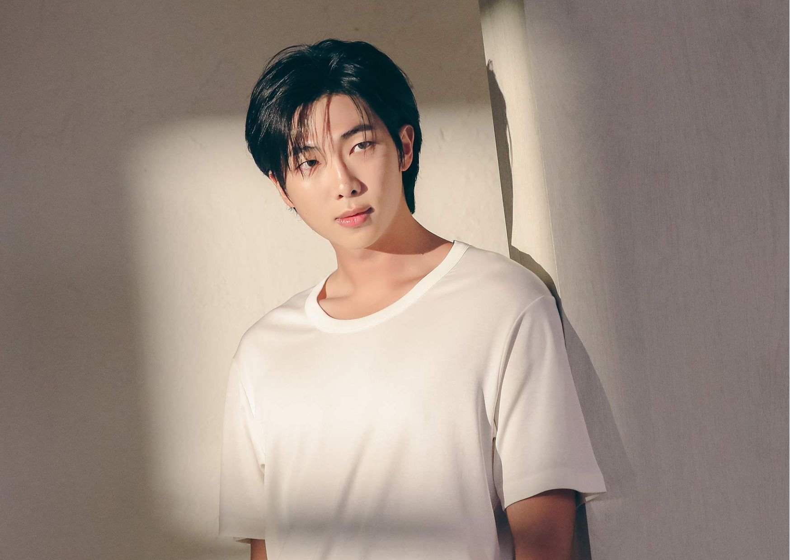
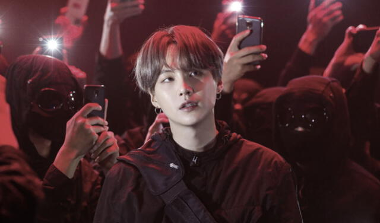
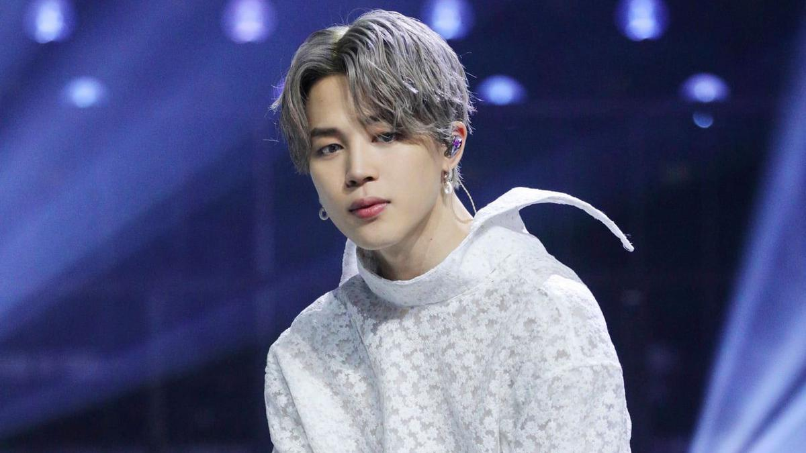

Miembros de la banda
RM
Kim Nam-joon nació el 12 de septiembre de 1994 en Dongjak-gu, Corea del Sur. Antes de su debut, era un rapero underground el cual usaba el nombre artístico "Runch Randa"; lanzó varias canciones y colaboró con el conocido rapero Zico. Era parte del grupo surcoreano de hip hop underground Daenamhyup, el cuál consiste de Marvel J, l11ven, Supreme Boi, Iron, Kyum2, Kidoh, Samsoon, Illipse, DJ Snatch y él. El grupo tuvo actividad desde 2009 hasta 2013, cuando RM dejó su participación en el grupo para concentrarse en BTS, aunque en una llamada con Supreme Boi, dijo que algún día volvería a participar con Daenamhyup, aunque algunos miembros del grupo continuaron participando sin RM.
RM tiene muchos logros académicos notables. Alcanzó un 850 en el TOEIC cuando estaba en secundaria, probablemente debido por haber estudiado en Nueva Zelanda. También estuvo en el top 1.3% de la nación en los exámenes de entrada a la universidad en lengua, matemática, idiomas extranjeros y ciencias sociales; además, tiene un CI de 148.
Además de su lengua materna, habla fluidamente inglés y japonés, ya que continuó estudiando japonés luego del debut de BTS, ya que todos los miembros de Big Hit reciben clases básicas de dicho idioma. También vio múltiples veces el sitcom estadounidense Friends para ayudarle a aprender inglés.
RM fue reclutado como el primer miembro de BTS en 2010, durante una audición de talento de Big Hit.
Videos musicales
| Año | Canción | Intérprete | Rol | Notas |
| 2015 | «P.D.D (Please Don’t Die)» | RM, Warren G | Él mismo | Sencillo |
| 2015 | «Do You» | RM | Él mismo | Parte del álbum RM |
| 2015 | «joke» | RM | Él mismo | Parte del álbum RM |
| 2015 | «Buckubucku» | MFBTY, EE, RM, Dino-J | Artista invitado | |
| 2015 | «Fantastic (Feat. Mandy Ventrice)» | RM, Mandy Ventrice | Él mismo | Banda sonora de la película Los 4 Fantásticos |
| 2017 | «Change» | RM, Wale | Él mismo | Sencillo |
| 2018 | «forever rain» | RM | Él mismo | Parte del álbum mono. |
| 2018 | «seoul (prod. HONNE)» | RM | Él mismo | Parte del álbum mono. |
| 2018 | «moonchild» | RM | Él mismo | Parte del álbum mono. |
JIN
Kim Seok-Jin (en hangul, 김석진), conocido por su nombre artístico JIN, es un cantante, actor, modelo, presentador, compositor y bailarín surcoreano. Desde 2013 es miembro del grupo BTS bajo la compañía Big Hit Music. Jin ha coescrito y lanzado tres canciones en solitario con BTS: «Awake» (2016), «Epiphany» (2018) y «Moon» (2020); todas han entrado en la lista digital Gaon de Corea del Sur. También apareció en la banda sonora del drama Hwarang (2016) junto a su compañero de grupo V. El 28 de octubre del 2022 presentó su último sencillo «The Astronaut» antes de unirse al servicio militar, que vendió más de un millón de copias. Por otro lado, Jin ha recibido elogios de los críticos por su falsete y su rango vocal como cantante.
Además de cantar, Jin ha participado como presentador en varios programas de música de Corea del Sur entre 2016 y 2018. En 2018 recibió la Orden al Mérito Cultural por parte del presidente surcoreano, junto a otros miembros de BTS, por su contribución a la cultura coreana.
Jin nació el 4 de diciembre de 1992 en Anyang-Gwangcheon, Corea del Sur. Su familia consiste en su madre, su padre y su hermano mayor. Mientras estaba en la escuela secundaria, Jin fue contactado en la calle por un scouter de la agencia de K-pop SM Entertainment, pero él rechazó la oferta en el momento. Asistió a la Universidad Konkuk y se graduó con un título en Arte y Actuación el 22 de febrero de 2017. El 28 de octubre de 2022, Jin hizo su debut en solitario con «The Astronaut», que coescribió junto con Chris Martin y Coldplay. Ese mismo día, Jin hizo una aparición especial en el tour de Coldplay, “Music of the Spheres” en Buenos Aires, Argentina, donde interpretó «The Astronaut» en vivo por primera vez junto al grupo.
Composiciones
| Canción | Año | Álbum | Artista |
| «Outro: Circle Room Cypher» | 2013 | 2 Cool 4 Skool | BTS |
| «Outro: Love Is Not Over» | 2015 | The Most Beautiful Moment in Life, Part 1 | BTS |
| «Boyz with Fun» | 2015 | The Most Beautiful Moment in Life, Part 1 | BTS |
| «Love Is Not Over» | 2016 | The Most Beautiful Moment in Life: Young Forever | BTS |
| «Awake» | 2016 | Wings | BTS |
| «Tonight» (이 밤) | 2019 | Sin álbum | JIN |
| «Moon» | 2020 | Map of the Soul: 7 | BTS |
| «In the Soop» | 2020 | Sin álbum | BTS |
| «Stay» | 2020 | Be | BTS |
| «Abyss» | 2020 | Sin álbum | JIN |
| «Super Tuna» | 2021 | Sin álbum | JIN |
| «The Astronaut» | 2022 | Sin álbum | JIN |
SUGA
Min Yoon-gi (en hangul, 민윤기; Daegu, 9 de marzo de 1993), más conocido por sus nombres artísticos Suga (estilizado en mayúsculas) y Agust D, es un rapero, compositor y productor surcoreano. En 2013 debutó como miembro del grupo BTS bajo la compañía Big Hit.
En 2010, formaba parte de un grupo underground de rap en su ciudad natal llamado D-Town. Comenzó su notoriedad con el grupo BTS en 2013, bajo la compañía Big Hit Music. El 15 de agosto de 2016 publicó su primer mixtape debut en solitario titulado Agust D, del cual salieron dos vídeos musicales para los temas «Agust D» y «Give it to Me». Tiene más de 100 canciones acreditadas a su nombre por la Korea Music Copyright Association (KOMCA). Suga entrenó bajo Big Hit Entertainment por tres años junto a sus compañeros RM y J-Hope. A pesar de haber entrado en Big Hit como compositor, el 13 de junio de 2013 debutó con el grupo BTS como rapero.
El 21 de abril de 2023 lanzó su primer álbum en solitario, D-Day, bajo su alias Agust D. El proyecto es la última entrega de la trilogía de mixtapes de Suga, que incluye Agust D (2016) y D-2 (2020). El 14 de febrero de 2023, Suga anunció su propia gira en solitario, empezando el 26 de abril en UBS Arena de Elmont, EEUU, y terminando el 25 de junio en Seúl, Corea del Sur.
Premios y nominaciones
| Premiación | Año | Categoría | Nominado/Trabajo | Resultado |
| Circle Chart Music Awards | 2023 | Música digital global – Abril | «That That» (con Psy) | Nominado |
| Golden Disc Awards | 2023 | Canción digital – Bonsang | «That That» (con Psy) | Ganador |
| Grammy Awards | 2023 | Álbum del año | Music of the Spheres (como compositor) | Nominado |
| MAMA Awards | 2019 | Mejor colaboración | «Song Request» (con Lee So-ra) | Ganador |
| MAMA Awards | 2020 | Mejor colaboración | «Eight» (con IU) | Ganador |
| MAMA Awards | 2022 | Mejor colaboración | «That That» (con Psy) | Ganador |
| MAMA Awards | 2022 | Mejor presentación de baile - Solista | «That That» (con Psy) | Ganador |
| MAMA Awards | 2022 | Canción del año | «That That» (con Psy) | Nominado |
| Melon Music Awards | 2017 | Hot Trend | «Wine» (como productor) | Ganador |
| Melon Music Awards | 2022 | Canción del año | «That That» (con Psy) | Nominado |
| Seoul Music Awards | 2023 | Elección de los fanáticos – Abril | SUGA | Pendiente |
J-Hope
Jung Ho-Seok (en hangul, 정호석; en hanja, 鄭號錫; Gwangju, 18 de febrero de 1994); más conocido por su nombre artístico J-Hope es un rapero, compositor, cantante, bailarín, coreógrafo, modelo y productor surcoreano. En 2013 debutó como miembro del grupo BTS bajo la compañía Big Hit Music.
J-Hope nació el 18 de febrero de 1994 en Gwangju, Corea del Sur. Antes de su debut con BTS, era un bailarín underground, y se presentaba bajo el nombre de Smile Hoya, nombre con el que ganó varios premios en competencias y festivales de baile, además, perteneció a dos grupos de baile callejero, GO Arts y NEURON. Estudió en la prestigiosa Academia de Baile de Seungri, y en 2009 audicionó para JYP Entertainment, donde fue admitido y llegó a presentarse junto a NEURON, compañía que posteriormente abandonaría.
J-Hope lanzó su primer mixtape, Hope World, el 2 de marzo de 2018. El 27 de septiembre de 2019 publicó la canción «Chicken Noodle Soup», que contó con la participación de la cantante estadounidense Becky G. El tema ocupó el puesto 81 en la Billboard Hot 100, lo que lo convirtió en el primer integrante de BTS en entrar en la lista como solista.
El 14 de junio de 2022, Hybe anunció a J-Hope como el primer miembro de BTS en comenzar las promociones como solista. Su álbum debut en solitario Jack in the Box, lanzado el 15 de julio, fue precedido por el sencillo principal "More" el 1 de julio. J-Hope hizo su debut en Lollapalooza el 31 de julio, como acto principal del último día del festival. Es el primer artista surcoreano en encabezar un escenario principal en un importante festival de música de los Estados Unidos.
Videos musicales
| Año | Canción | Intérprete | Rol |
| 2012 | «I'm da One» | Jo Kwon | Bailarín |
| 2018 | «Daydream» | J-Hope | Él mismo |
| 2018 | «Airplane» | J-Hope | Él mismo |
| 2019 | «Chicken Noodle Soup (feat. Becky G)» | J-Hope, Becky G | Él mismo |
| 2022 | «More» | J-Hope | Él mismo |
| 2022 | «Arson» | J-Hope | Él mismo |
| 2023 | «on the street (with J. Cole)» | J-Hope, J. Cole | Él mismo |
Jimin
Park Ji-Min (en hangul, 박지민; en hanja, 朴智旻), más conocido como Jimin (en hangul, 지민), es un cantante y bailarín surcoreano. En 2013 debutó como integrante del grupo BTS bajo la compañía Big Hit Entertainment.
Jimin nació el 13 de octubre de 1995 en Geumjeong-gu, Busan, Corea del Sur. Además de su padre y madre, también tiene un hermano menor. Cuando era pequeño asistió a la Escuela Primaria Hodong y a la Yonsan Middle School. Asimismo tomó clases en la Academia Just Dance, donde aprendió distintos tipos de baile urbano como popping y locking.[cita requerida] Antes de convertirse en aprendiz, Jimin estudió en la Escuela Superior de Artes de Busan, donde practicó danza moderna; fue el estudiante más destacado de su departamento. Audicionó para Big Hit Entertainment después de que un profesor le sugiriera postular para una agencia de entretenimiento. Posteriormente se transfirió a la Escuela Superior de Artes de Corea en 2012, tras ser admitido en la compañía.
Jimin se graduó de la Global Cyber University en agosto de 2020, con una especialidad en Entretenimiento y Telecomunicación. A fecha de 2021, estudia una Maestría en Administración de Empresas en la Hanyang Cyber University.
El 30 de diciembre de 2018 publicó su primer tema en solitario, «Promise», en la página de SoundCloud de BTS. El 3 de enero de 2019, la plataforma anunció que «Promise» había superado el récord de la canción más reproducida en 24 horas tras su lanzamiento, que pertenecía previamente a «Duppy Freestyle» de Drake. Tamar Herman de Billboard la describió como una «balada pop apacible»; Jimin la compuso junto con Slow Rabbit, quien también la produjo, y escribió la letra con su compañero de BTS RM. El 24 de diciembre de 2020 publicó «Christmas Love», que trata sobre los recuerdos de su infancia durante las festividades de Navidad. En 2022, Jimin participó en la banda sonora del drama Our Blues con «With You», un dueto con Ha Sung-woon, que se lanzó el 24 de abril.
V
Kim Tae-Hyung (en hangul, 김태형; en hanja, 金泰亨), más conocido por su nombre artístico V, es un cantante y actor surcoreano. Desde 2013 es miembro del grupo BTS bajo la compañía Big Hit Music.
Kim Taehyung nació el 30 de diciembre de 1995 en Daegu, Corea del Sur, y creció en Geochang-gun. Es el mayor de 3 hermanos; tiene una hermana y un hermano menor. Comenzó a aspirar a ser un cantante profesional en la escuela primaria, por lo que para lograrlo empezó a tomar clases de saxofón, con el apoyo de su padre. Se convirtió en aprendiz de Big Hit después de pasar una audición en Daegu en 2011. Después de terminar la secundaria en la Korean Arts High School en 2014, V asistió a la Global Cyber University, de donde se graduó en agosto de 2020 con una especialidad en Entretenimiento y Telecomunicación. A fecha de 2021, estudia una Maestría en Administración de Empresas en la Hanyang Cyber University.
V debutó como integrante de BTS el 13 de junio de 2013 y desde entonces, en su carrera como parte del grupo, ha interpretado tres canciones en solitario: «Stigma», «Singularity» y «Inner Child». «Stigma» formó parte del segundo álbum de estudio de BTS Wings (2016) y «Singularity» se lanzó como el tema introductorio de Love Yourself: Tear (2018). Un mes después de su publicación, The Guardian lo añadió a su lista de reproducción «Top 50 de canciones para el mes de junio de 2018». Billboard incluyó el tema en el puesto 28 en su lista de críticos musicales «Top 50 de canciones de BTS».
El 4 de febrero de 2016, V apareció junto a Kim Min Jae en el programa Celebrity Bromance, de la cadena MBC. En el mismo mes, V realizó su debut como actor en el drama histórico Hwarang: The Poet Warrior Youth de KBS 2TV y colaboró en la banda sonora de la serie con el tema «It's Definitely You», que también contó con la participación de su compañero de grupo Jin. El 8 de junio de 2017 publicó la canción «4 O'Clock», que produjo con RM para celebrar el cuarto aniversario de BTS.
El 25 de octubre de 2018, él y los demás integrantes de BTS recibieron la Orden al Mérito Cultural, específicamente la quinta clase (Hwagwan), otorgada por el Presidente de Corea del Sur. Similarmente, en julio de 2021 el presidente Moon Jae-in lo eligió —junto con los otros miembros del grupo— como Enviado Presidencial Especial para las Generaciones Futuras y la Cultura para «liderar la agenda global para las generaciones futuras, como el crecimiento sostenible» y «expandir los esfuerzos diplomáticos de Corea del Sur y su posición mundial» en la comunidad internacional.
Jungkook
Jeon Jung-kook (en hangul, 전정국; en hanja, 田柾國; Busan), conocido como Jungkook, es un cantante y bailarín surcoreano. En 2013 debutó como integrante del grupo BTS bajo la compañía Big Hit Music.
Jungkook nació el 1 de septiembre de 1997, en Busan, Corea del Sur. Su familia consiste en su padre, su madre y un hermano mayor. Asistió a la escuela Baekyang en Busan, antes de convertirse en aprendiz y transferirse a la Singu Middle School en Seúl.
En 2011, Jungkook audicionó para participar en el programa de talentos Superstar K, cuando se realizaron audiciones en Daegu. A pesar de que no fue seleccionado, recibió ofertas de siete compañías de entretenimiento, entre ellas JYP Entertainment, Cube Entertainment, FNC Entertainment y Big Hit. Eventualmente decidió firmar con esta última empresa después de ver a RM, su compañero de BTS, interpretar rap.Como parte de su entrenamiento y previo a su debut, viajó a Los Ángeles durante el verano de 2012 para mejorar sus habilidades de baile en la academia Movement Lifestyle. En 2017 se graduó de la Escuela de Artes Escénicas de Seúl. A fecha de 2021, estudia Entretenimiento y Telecomunicación en la Global Cyber University.
En su carrera como parte del grupo, ha interpretado tres canciones en solitario: «Begin», «Euphoria» y «My Time». «Begin» formó parte del segundo álbum de estudio de BTS Wings (2016); es una canción pop en la que Jungkook abordó su historia al mudarse a Seúl para convertirse en idol y expresó su gratitud hacia sus compañeros de grupo por cuidar de él durante ese tiempo. «Euphoria» es una pista que pertenece al género future bass y fue producida por DJ Swivel. Se lanzó junto con un video de nueve minutos el 5 de abril de 2018 como la introducción a la tercera parte de la serie «Love Yourself» de BTS. Posteriormente la versión completa se publicó en el álbum recopilatorio Love Yourself: Answer el 24 de agosto de 2018. En cambio, «My Time» es un tema R&B acerca de cómo renunció a experencias durante su adolescencia debido su carrera. La canción se incluyó en el álbum Map of the Soul: 7 (2020) y estuvo tanto en el número 84 en la Billboard Hot 100 como en el primer lugar en la World Digital Song Sales. Asimismo, «Begin» y «Euphoria» alcanzaron la primera posición en esta última lista.